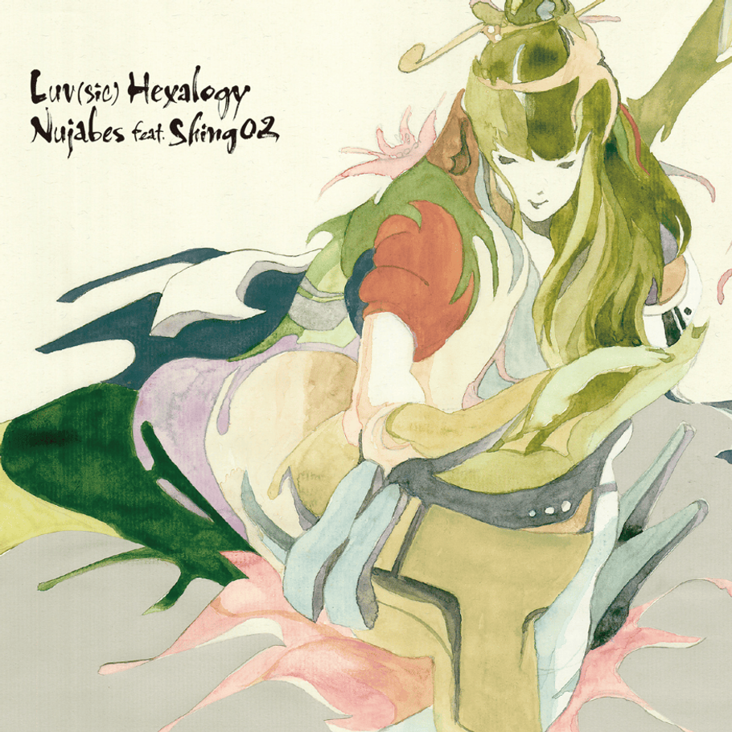

Hai, Perkenalkan nama saya adalah Faris Azryello
Memiliki pengalaman mempelajari C++ selama 1 semester dan sekarang sedang mempelajari UI/UX (Html, Css, Javascript), mempelajari database (MySql) dan Php.
1. Bermain Game
2. Mendengarkan Lagu
3. Membaca Komik
Saya pernah berpartisipasi dalam Olimpiade Genza IPS dan mendapatkan juara 2 di tingkat Kabupaten. Pada tingkat Provinsi, saya berhasil meraih 10 besar dari 45 peserta. Saya juga memiliki prestasi dalam bidang Pramuka dan English Competition.